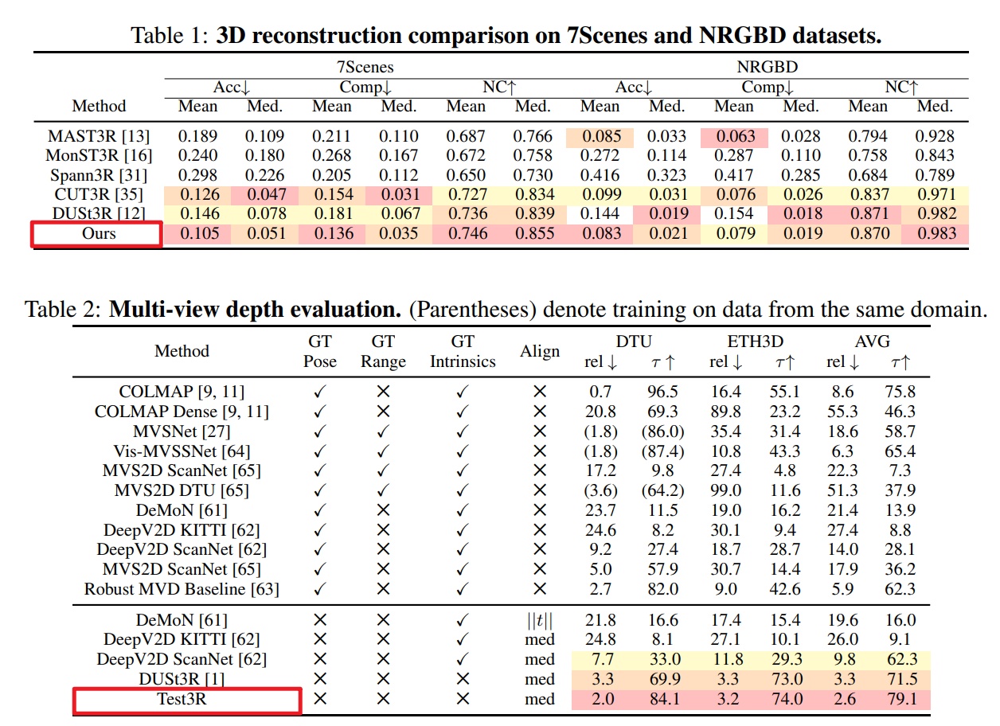
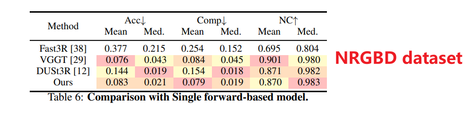

Test-time Training, Cross-pair Consistency, Visual Prompt Tuning
DUSt3R 是成对预测的，A-B 一组，B-C 一组，拼起来时 A-B-C 往往不对齐。如果重建是完美的，那无论 reference view 和谁配对，它恢复出的几何形状都应该是一样的。
本文利用这种用多视图间的几何一致性作为监督信号，在测试时优化模型。
Pipeline
Triplet Construction: 不再只看一对图，而是构建三元组 (Iref,Isrc1,Isrc2).
两次推理:
- 输入 Pair A (Iref,Isrc1) → 输出 X1ref, ref (基于 src1 预测的 ref 点云)。
- 输入 Pair B (Iref,Isrc2) → 输出 X2ref, ref (基于 src2 预测的 ref 点云)。
强制两次预测的 ref 点云一致: loss = ||X1ref, ref − X2ref, ref||
Visual Prompt Tuning
为了减小计算量，不微调整个大模型。
冻结 DUSt3R 的 encoder 和 decoder 权重，只在 encoder 的每一层 transformer 插入可学习的 Prompt Tokens Pi。测试时针对当前场景，利用一致性损失仅通过梯度下降更新这些 Prompt 参数。 [_,Ei] = Li([Pi − 1,Ei − 1])
Experiments


Conclusion
DUSt3R 的成对预测存在结构不一致，引入 triplet consistency 作为测试的自监督信号。并使用 visual prompt tuning 做 test time training，避免了高成本的全量微调。
局限：如果输入图片本身质量太差则无法进行结构优化；只约束了参考视角 ，两个源视角的信息没被充分利用 。
思考：prompt tokens 实际上是 scene embeddings，让冻结的模型意识到当前特有的场景分布。